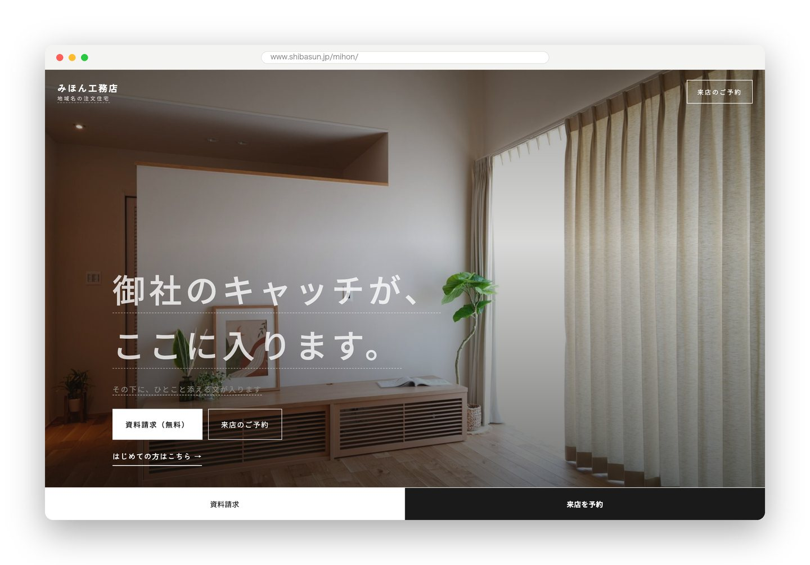
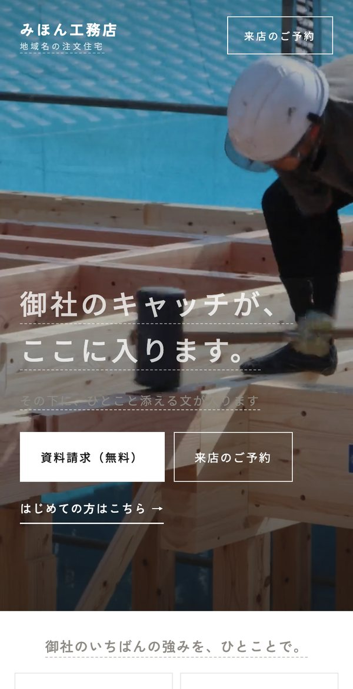
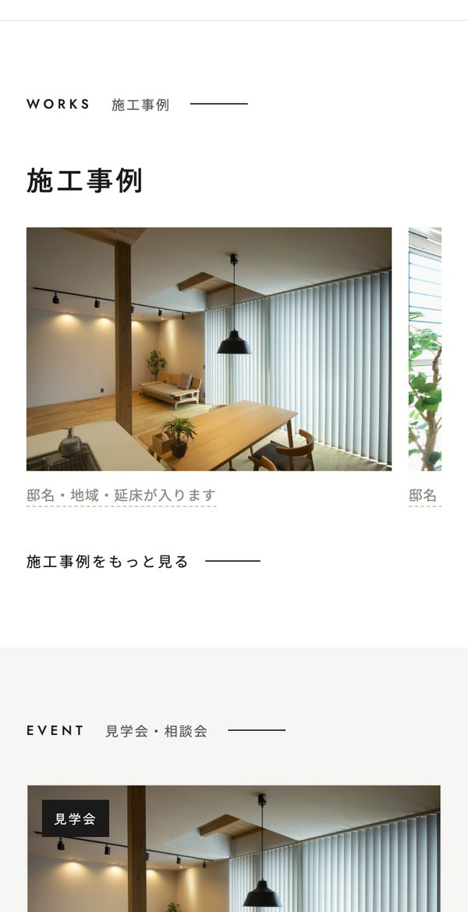
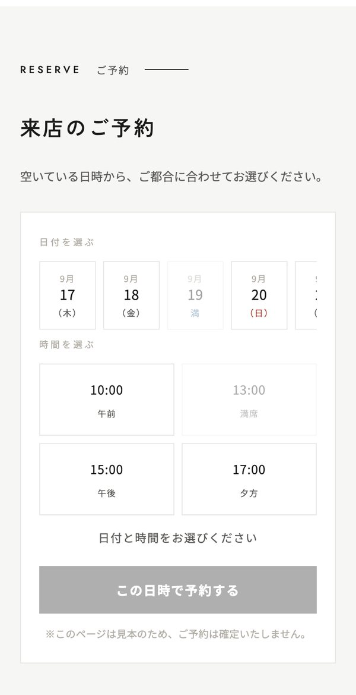
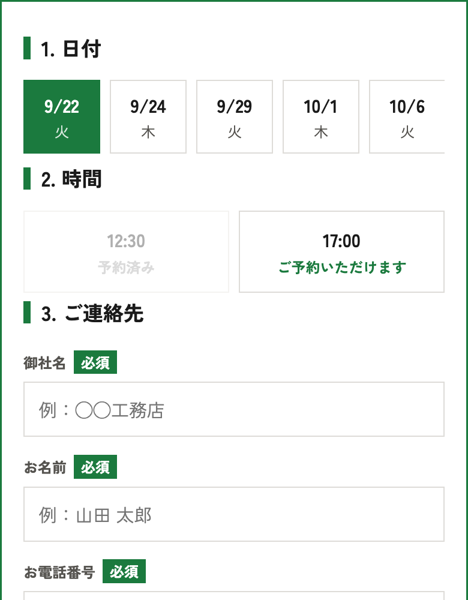
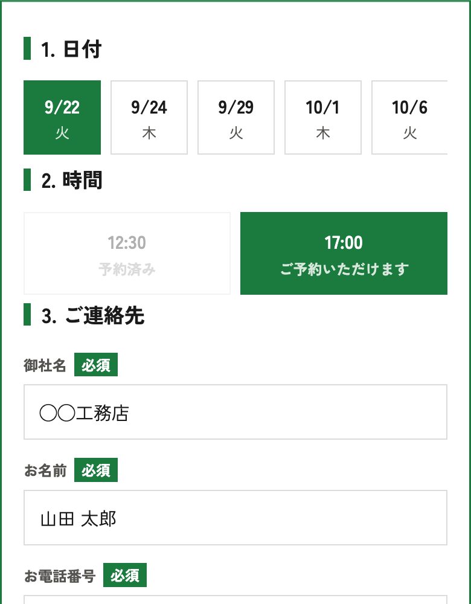
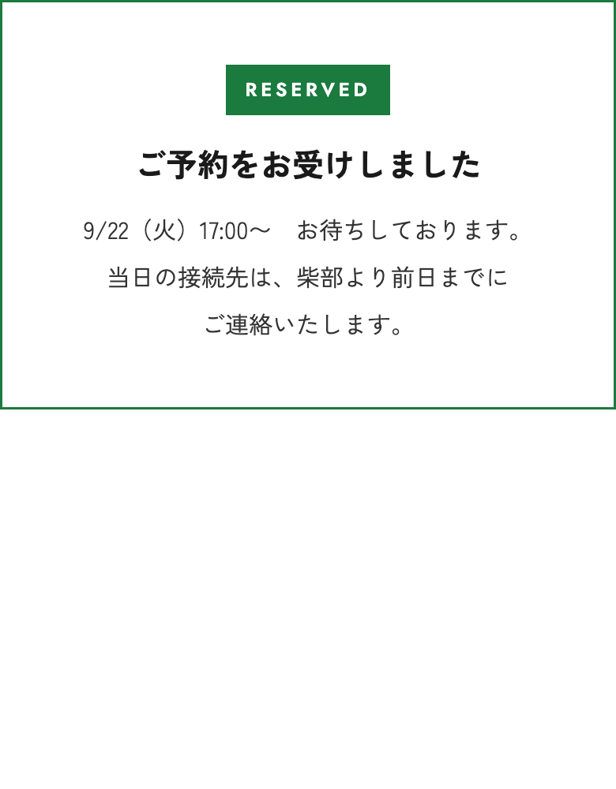

奈良の工務店が、自分の会社のホームページを
作り替えました。同じ手順を、
他府県の工務店さんのホームページで行っています。
見本としてお作りした「みほん工務店」のホームページです。写真と文章を御社のものに入れ替えて、同じ形でお作りします。




横に送ると、ほかの画面も見られます
ご予約の操作も、そのまま試せます（見本のため確定はしません）
うちも、そうでした。
ですが「集客のしくみ」を取り入れて
ホームページを全面リフォームすると
お問合せの数が8倍に増えました。
私どもは工務店として、集客・営業・施工・SNSなど、
日々の仕事の中でホームページの困りごとを実感してきました。
その経験があるからこそ、「工務店の成果」につながるホームページを考えられます。
ただのホームページ制作会社にはできない、
工務店だからこそできる
工務店のためのホームページづくり。
ここに並べたものは、すべて去年までの私どもの話です。ホームページは十年ほど、ただ置いてあるだけでした。そこで一から作り替えました。
特別なことはしていません。同じ手順を、御社のホームページで行うだけです。
日程調整のやり取りがないから、お問合せのハードルが下がります。
会社のGoogleカレンダーと繋いで、空いている日時をお客様の画面に出します。お客様は、電話をかけずに簡単に予約ができます。
御社にとっても、日程を合わせるやり取りが要らなくなり、二重に入る心配もなくなります。
お客様がAIに「おすすめの工務店」を聞く時代です。AIが読み取れる形で、会社の情報を書き込みます。対応できている工務店は、まだ26%です。
制作会社ではなく、同業の工務店です。自分の会社のホームページで試した手順を、そのまま行います。
Googleで検索されるだけでは、お客様の候補に上がらなくなっています。
お客様は、検索の代わりにAIに「おすすめの工務店」を聞くようになりました。
AIが読むのは見た目ではなく、ページに書き込まれた会社の情報です。
作り替えでは、AIに読める形で、会社の情報を書き込むところまで行います。
御社のお客様が、電話をかけずに簡単に予約ができます。



あとから「これは別料金です」と申し上げないために、入るものを先に全部書いておきます。
※お支払いは着手時20万円／完成時30万円
※公開後の更新と管理をお任せいただく場合は、維持管理費として月2万円（月2回までの更新・コラム1本・不具合の対応）
※写真の撮り直しが必要な場合のみ、カメラマンの費用を実費でいただきます
いま同時にお受けできるのは3社様までです。埋まっている場合は、次にお受けできる時期をお伝えします。
まずは30分、無料で相談してみる →リモートで30分。お話を伺う／ご質問にお答えするだけです。無理な売り込みは致しません
どこを直すとよいか、いくらかかるかお見積りをお出しします。ここまで費用はかかりません
ご依頼をいただいてから、4〜6週間でホームページ公開まで。御社の出番は3回だけです
リモートで30分。下の空いている日時から、ご都合の枠をお選びください。今なら、御社のホームページの無料診断つき。改善点をお伝えします。費用はかかりません。その場で売り込むこともいたしません。
空いている日時から、ご都合に合わせてお選びいただけます。費用はかかりません。その場で契約のお願いもいたしません。
お電話でも受け付けています 0742-81-3948 ／ メールで聞く